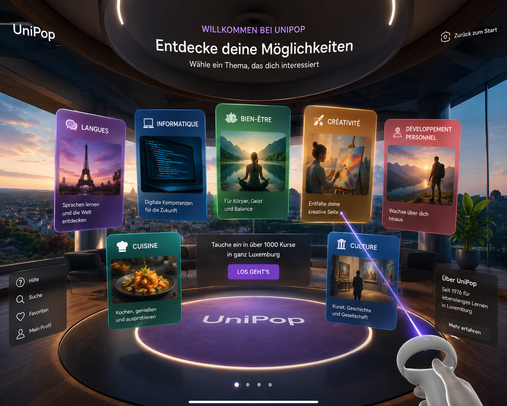
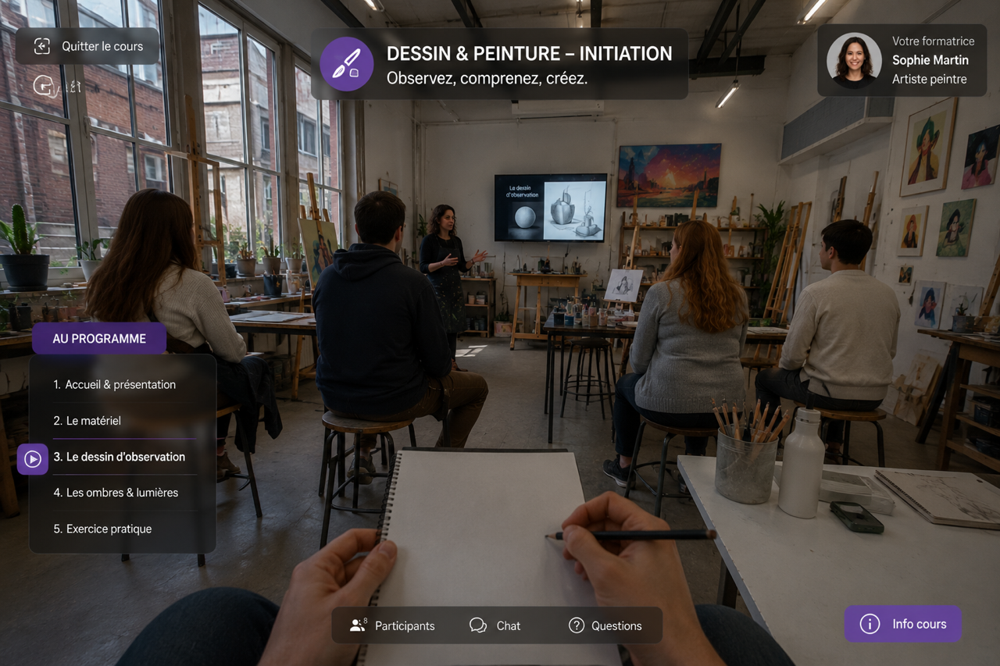

UniPop VR
An immersive Unity-based VR experience that allows visitors to discover UniPop courses by virtually stepping directly into a real training session.
Overview
UniPop VR is an ongoing virtual-reality project designed to present UniPop courses in a much more immersive way than a traditional catalogue, poster or video presentation.
The concept is intended especially for fairs, exhibitions and public presentations. Visitors put on a VR headset, select a course they are interested in and are transported directly into an immersive recording of that course.
Instead of simply reading what a course is about, the visitor gets the impression of being physically present in the room and can experience how a real UniPop course could feel.
Project details
The objective of the project is to make the UniPop course catalogue more tangible and experiential. Course descriptions are useful, but they cannot fully communicate the atmosphere, teaching style, group interaction or physical environment of a real training session.
UniPop VR addresses this by combining an interactive Unity interface with immersive video recordings. After putting on the headset, the visitor enters a virtual selection environment where different UniPop courses can be explored.
Once a course is selected, the experience switches into an immersive video recorded inside the actual course environment. The viewer can look around naturally and experience the room, trainer and participants from a first-person perspective.
The project is especially suited to trade fairs and UniPop promotional events, where a limited physical booth can become a gateway to many different course locations and learning experiences.
Course selection in VR
Visitors can browse and select different UniPop courses directly from an interactive virtual environment.
Immersive course videos
Selected courses are presented through immersive video, allowing the viewer to feel present inside the training room.
Unity interface
Unity provides the interactive VR environment, navigation and course-selection logic.
Real course atmosphere
The experience communicates more than information by showing the actual room, trainer, group and teaching environment.
Event & fair use
The concept is designed for exhibitions, fairs and public events where visitors can discover UniPop through a headset.
Scalable course library
Additional immersive course recordings can be added over time, turning the application into a growing virtual course showcase.
Technology
UniPop VR is being developed in Unity, which provides the virtual environment, interaction system and headset integration.
The project combines a 3D user interface with immersive video content. Unity manages the course-selection experience and then loads the corresponding immersive media once the visitor selects a course.
The solution is designed for standalone VR use at fairs and events, allowing the experience to run directly from a headset without requiring the visitor to interact with a conventional computer interface.
Media & demo
The screenshots below can show the complete UniPop VR experience: the Unity development environment, the virtual course-selection interface, headset testing and examples of immersive course recordings.
The media can also demonstrate the transition from the virtual menu into the actual course experience and show how visitors at an event can explore several different UniPop courses from a single VR station.

